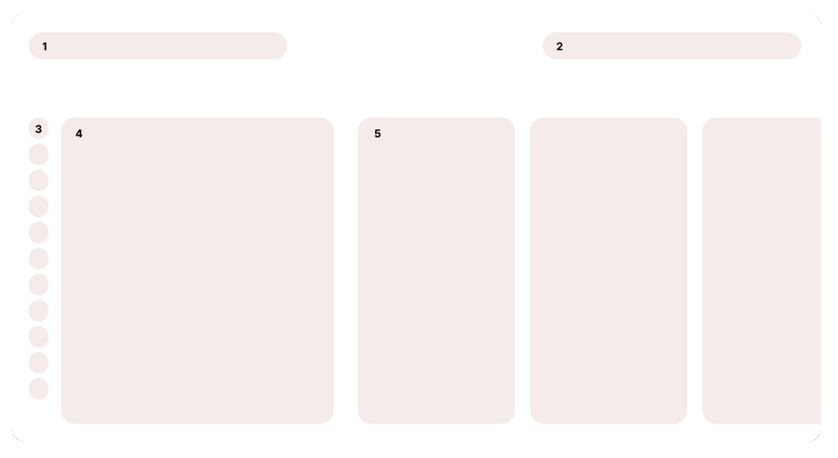

Phase 1: analysis
Most of the interaction was disjointed.
Take a look at the visualization below. Changing the contents and drilling down on the data in the table is an ongoing task for the airlines’ analysts. Therefore, the method should be intuitive and fast. The analysis, as shown in the visual, is not efficient; on the contrary, it requires the user to move back and forth over the table.

I would define the ideal structure of any digital service to focus on solving its most popular use cases. The challenge for NN was solving this with a lack of user insights as we had to rebuild the app without any available research. So we needed a form of information architecture that would support all content and services. One that users would understand - so on the longer run, we could address actual use cases.
Imagine being able to accomplish everything right where you need it. This way, you get your results quickly and can easily iterate on them moving forward.
With this many products getting lost would get very easy. Especially since the list of products shared so little - other than being financial. I applied a simple blueprint all content had to adhere to. This way, your way home was never difficult. The top layer features the full list; one level down is for an individual product and any funnel within this product would be on the third level. So wherever you are: two levels up and you're home.
The Test